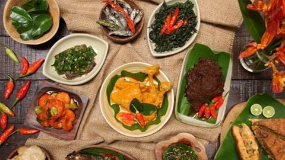

Makanan khas indonesia yang Mendunia
1.Gado-gado
Makanan khas Jawa yang bisa disebut sebagai "saladnya" Indonesia ini cukup terkenal di luar negeri,
terutama di Napoli, Italia. Hal ini dikarenakan gado-gado pernah diikutsertakan dalam kompetisi yang bersaing dengan hidangan dari negara-negara lainnya dan meraih juara pertama.
Terhitung dari nilai estetika yang dimiliki, keunikan bahan yang digunakan, serta cita rasa yang dinilai sangat tinggi.
2.Gorengan
terutama pada tempe, Tempe yang terbuat dari kacang kedelai bisa digabungkan dengan cara penyajian yang bervariatif. Namun tahukah kamu, masyarakat Jepang membuat
hidangan ini sebagai salah satu
favorit mereka lho.Berawal dari seseorang yang menjual tempe dalam sebuah bazaar kuliner Jepang. Sekali mencoba, mereka langsung menyukainya.
3.Rendang
Selain disukai masyarakat Indonesia, makanan khas Sumatera Barat ini juga tersohor hingga seluruh penjuru dunia.
Rendang berada di posisi pertama dalam jajaran 50 makanan dunia terenak versi CNN yang diadakan di Jerman beberapa waktu lalu.
Rasanya yang khas dan keempukan dagingnya menjadi faktor penentu utama.
4.Nasi goreng
Fried rice.Setiap negara memiliki menu nasi goreng. Namun, rasa nasi goreng Indonesia lebih khas karena memakai bumbu lengkap. Gak heran kalau nasi goreng Indonesia juga sempat masuk dalam daftar makanan terenak di dunia.
Presiden Amerika Serikat ke-44 Barrack Obama pun sangat menyukai nasi goreng khas Indonesia.
5.Sate
kata orang indonesia sih "sate" tapi kata mereka itu "satai"
Sate Padang dan sate Madura menjadi varian yang paling dikenal sekaligus favorit banyak orang. Belakangan,
tidak hanya wisatawan asing yang mencari dan ingin mencoba sate, tetapi sejumlah restoran internasional telah memasukkan sate dalam menunya.
Di New York, terdapat sebuah restoran bernama Satay Junction yang menyediakan sate ayam sebagai hidangan andalannya
6.Mie goreng
Kalau yang ini sih sebenernya kamu bisa temuin dimana mana. Tapi yang dari indonesia aja nih yang rasanya gak bakal tertandingi.
Variasi bumbu dan bahan membuat lezatnya mie goreng khas Indonesia tak tertandingi.
7.Pempek palembang
kalau yang satu ini nggak bakal kalah lagi sama yang lainnya . Pempek khas palembang, membuat WNI yang tinggal di negara asing membuat makanan ini karena orang negara asing menyukainya.